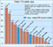

Oppdatert: 12. januar 1996 kl. 09:46
NORSK GALLUP OM NYE MEDIER:
Ingen surfere over 60
120 000 nordmenn (tre prosent) har Internett hjemme - 499 000 på jobben. Likevel vil det ta lang tid før bestemor sender barnebarna en e-mail og etterlyser besøk.
PER ANNAR HOLM

Norsk Gallup Institutts første halvårlige måling hvor også nettsurferne er tatt med, viser at ingen av de spurte over 60 år hadde Internett hjemme.- Vi ser en klar sammenheng mellom alder, høy utdannelse og kjønn i bruken av Internett. Jeg tror antall brukere i Norge vil dobles i år, men det nye interaktive mediet vil bare være forbeholdt en elite i dette århundret, sier medieforsker Knut Arne Futsæter i Norsk Gallup.
Typisk bruker
Hele ti prosent av den norske befolkning har brukt Internett i løpet av den siste måneden. Den typiske brukeren er en mann mellom 15 og 29 år med høyere utdannelse.Undersøkelsen viser også en sterk vekst i bruk av tekst-TV. Spesielt TV2 er i støtet med en økning på tre prosent siste halvår, mens storebror står stille. NRKs og TV2s tekst-sider er i dag Norges femte og niende mest brukte medie (se grafikk).
- Sport, spill og nyheter er de klart mest brukte sidene, men det er også en tendens til at folk bruker tekst-TV til å sjekke programoversiktene i stedet for å slå disse opp i ukeblader eller aviser, sier Futsæter.
Totalt var 1015 personer over 13 år med i undersøkelsen, som viser at hvert tredje hjem nå har egen PC. 30-44 åringene ligger høyest med 46 prosent PC-dekning, og størst er konsentrasjonen i Oslo og Akershus. 51 prosent av oss har PC der vi arbeider eller studerer.
Seks prosent av befolkningen (209 000 personer) sier at de vil anskaffe Internett hjemme i år - like mange tror arbeidsgiver eller skole vil åpne mulighetene.
- Mye tyder på at den største aktøren Telenor vil innlede en priskrig som den vi så på mobiltelefoner. Derfor tror vi bruken vil øke, sier Futsæter. Hovedtyngen av surferne ligger i aldersgruppen 15-44 år, og menn er i klar overvekt. Den samme tendensen viser bruk av tekst-TV på NRK og TV2. 73 prosent av befolkningen kan i dag ta inn tekst-TV.
[Innhold] [Info] [Aftenposten hjemmeside] [Kultur/Underholdning hovedside]
{kind=link}